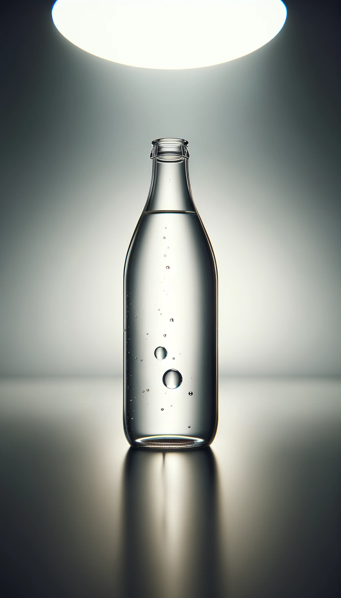

LAQUAGE
Les Celliers Associés, propriétaire de la marque Val de Rance, lancent une gamme de cidres premium baptisée Perle de cidre et décorés en sérigraphie émail 3 couleurs.
Plus d'infosLaquage
Pose d'accessoires
Satinage
Sérigraphie
Galerie
Les Celliers Associés, propriétaire de la marque Val de Rance, lancent une gamme de cidres premium baptisée Perle de cidre et décorés en sérigraphie émail 3 couleurs.
Plus d'infosLes Celliers Associés, propriétaire de la marque Val de Rance, lancent une gamme de cidres premium baptisée Perle de cidre et décorés en sérigraphie émail 3 couleurs.
Plus d'infosGalerie
Les Celliers Associés, propriétaire de la marque Val de Rance, lancent une gamme de cidres premium baptisée Perle de cidre et décorés en sérigraphie émail 3 couleurs.
Plus d'infosLes Celliers Associés, propriétaire de la marque Val de Rance, lancent une gamme de cidres premium baptisée Perle de cidre et décorés en sérigraphie émail 3 couleurs.
Plus d'infos